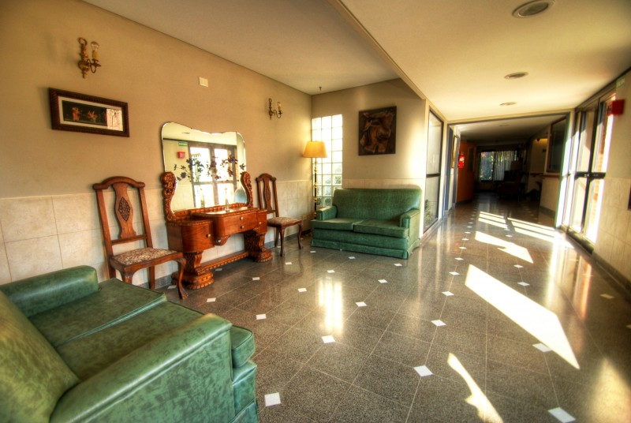
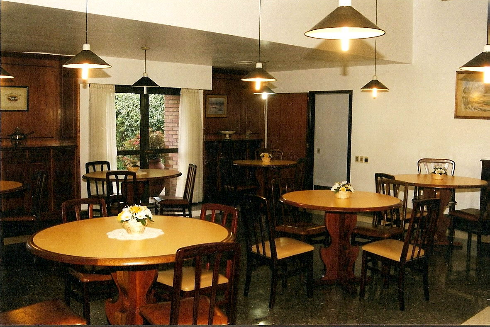
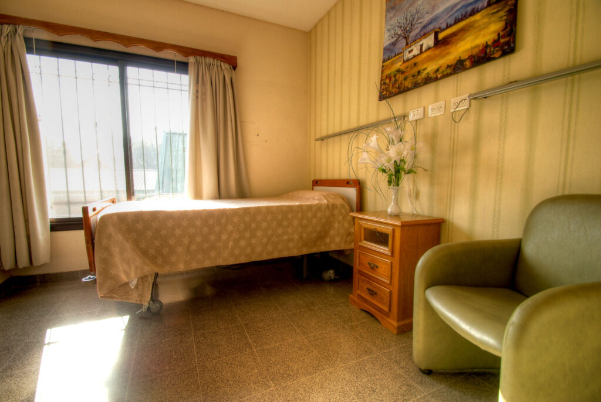

INSTALACIONES
de nuestra Residencia
El diseño de nuestro hogar para ancianos o adultos mayores se inspiró en las famosas nursing homes europeas, y de hecho logró adaptar los conceptos que rigen esas prestigiosas instituciones a nuestro medio. De esta forma se logró conformar un lugar único para la función requerida, con la mejor disposición estructural para funcionar como casa hogar de reposo y descanso y vivienda para el cuidado de abuelos o adultos mayores de la tercera edad.

Espacios intimos
Estos espacios fueron diseñados y preparados para que nuestros huéspedes puedan compartir momentos íntimos con sus parientes y visitas dentro de nuestro geriátrico en zona oeste.Comedor
Espacioso y luminoso, con salida directa a los jardines que rodean a nuestra residencia para la tercera edad. Está equipado con vajilla y mobiliario especialmente diseñado para acomodarse a las necesidades de nuestros huéspedes. Por ejemplo las sillas son de madera y tienen respaldos semicirculares que brindan mayor confort y seguridad, adaptándose a la anatomía de nuestros residentes y facilitando su contención y cuidado. En el comedor de nuestra casa de retiro todo está diseñado para acompañarnos adecuadamente en uno de los momentos más importantes del día: la hora de las comidas.

